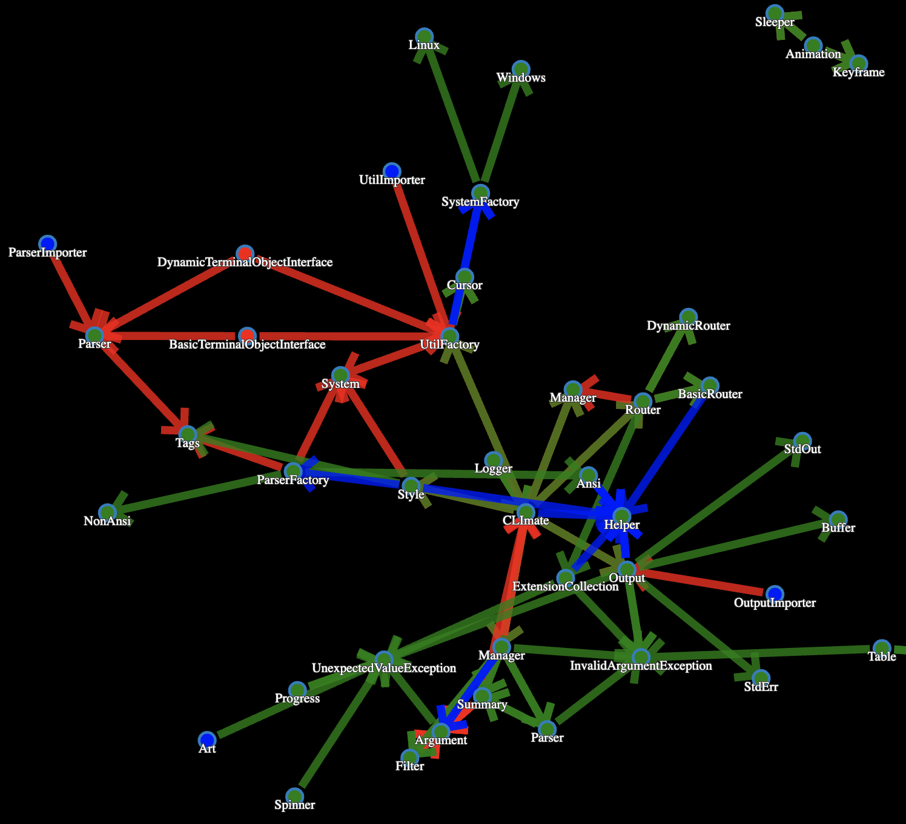
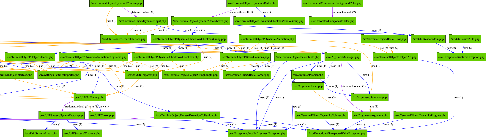
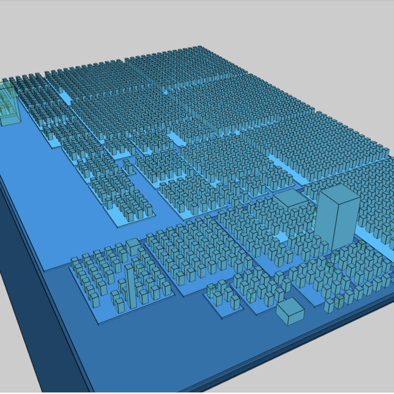
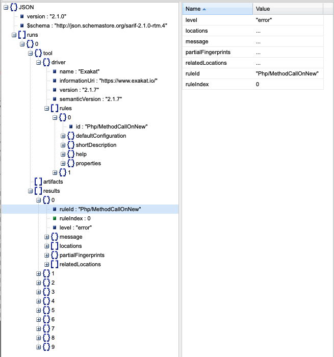

3. Reports¶
3.1. Introduction¶
Exakat provides multiple view to explore issue or metric generated by the rules.
3.2. Summary¶
Json
Json
3.3. List of Reports¶
3.3.1. Ambassador¶
3.3.1.1. Ambassador¶
Ambassador is the most complete Exakat report. It used to be the default report, until Exakat 1.7.0
The Ambassador report includes :
Full configuration for the audit
Full documentation of the analysis
All results, searchable and browsable by file and analysis
- Extra reports for
Minor versions compatibility
PHP Directive usage
PHP compilation recommendations
Error messages list
List of processed files
Ambassador includes the report from 3 other reports : PhpCompilation, PhpConfiguration, Stats.
3.3.1.1.1. Specs¶
Short name |
Ambassador |
Rulesets |
CompatibilityPHP53, CompatibilityPHP54, CompatibilityPHP55, CompatibilityPHP56, CompatibilityPHP70, CompatibilityPHP71, CompatibilityPHP72, CompatibilityPHP73, CompatibilityPHP74, CompatibilityPHP80, Analyze, Preferences, Inventory, Performances, Appinfo, Dead code, Security, Suggestions. |
Type |
HTML |
Target |
This report is written in ‘report’. |
Available in |
3.3.2. BeautyCanon¶
3.3.2.1. BeautyCanon¶
The Beauty Canon report lists all rules that report no issues.
The Beauty Canon report displays one result per line. This report lists all issues in the provided ruleset that are reporting no error.
The title of the analysis is listed on the left, and the analysis short name is listed on the right, for further documentation.
This analysis uses Analysis as default rule. It may otherwise parametered with the -T option.
Compare Hash Security/CompareHash
Configure Extract Security/ConfigureExtract
Dynamic Library Loading Security/DynamicDl
Encoded Simple Letters Security/EncodedLetters
Indirect Injection Security/IndirectInjection
Integer Conversion Security/IntegerConversion
Minus One On Error Security/MinusOneOnError
Mkdir Default Security/MkdirDefault
No ENT_IGNORE Security/NoEntIgnore
No Hardcoded Hash Structures/NoHardcodedHash
No Hardcoded Ip Structures/NoHardcodedIp
No Hardcoded Port Structures/NoHardcodedPort
3.3.2.1.1. Specs¶
Short name |
BeautyCanon |
Rulesets |
This reports works with an arbitrary list of results. |
Type |
Text |
Target |
This report is written to the standard output. |
Available in |
3.3.3. ClassReview¶
3.3.3.1. ClassReview¶
The ClassReview report focuses on reviewing classes, traits and interfaces.
The ClassReview report focuses on good code hygiene for classes, interfaces and traits.
It checks the internal structure of classes, and suggest visibility, typehint updates.
3.3.3.1.1. Specs¶
Short name |
ClassReview |
Rulesets |
ClassReview. |
Type |
HTML |
Target |
This report is written in ‘classreview’. |
Available in |
3.3.4. Classes dependendies HTML¶
3.3.4.1. Classes dependendies HTML¶
This reports displays the class dependencies, based on definition usages.
This report displays all dependencies between classes, interfaces and traits. A class (or interface or trait) depends on another class (or interface or trait) when it makes usage of one of its definitions : extends, implements, use, and static calls.
For example, A depends on B, because A extends B.
The resulting diagram is in HTML file, which is readable with most browsers, from a web server.
Warning : for browser security reasons, the report will NOT load as a local file. It needs to be served by an HTTP server, so all resources are correctly located.
Warning : large applications (> 1000 classes) will require a lot of resources to open.
3.3.4.1.1. Specs¶
Short name |
Classes dependendies HTML |
Rulesets |
Classes dependendies HTML doesn’t depend on rulesets. |
Type |
HTML |
Target |
This report is written in ‘class_dependencies’. |
Available in |
3.3.5. Clustergrammer¶
3.3.5.1. Clustergrammer¶
The Clustergrammar report format data for a clustergrammer diagram.
Clustergrammer is a visualisation tool that may be found online. After generation of this report, a TEXT file is available in the project directory. Upload it on [http://amp.pharm.mssm.edu/clustergrammer/](http://amp.pharm.mssm.edu/clustergrammer/) to visualize it.
See a live report here : [Clustergrammer](http://amp.pharm.mssm.edu/clustergrammer/viz_sim_mats/5a8d41bf3a82d32a9dacddd9/clustergrammer.txt).
3.3.5.1.1. Specs¶
Short name |
Clustergrammer |
Rulesets |
Clustergrammer doesn’t depend on rulesets. |
Type |
TEXT |
Target |
This report is written in ‘clustergrammer.txt’. |
Available in |
3.3.6. Code Flower¶
3.3.6.1. Code Flower¶
The Code Flower represents hierarchies in a code source.
Codeflower is a javascript visualization of the code. It is based on Francois Zaninotto’s [CodeFlower Source code visualization](http://www.redotheweb.com/CodeFlower/).
It represents :
Class hierarchy
Namespace hierarchy
Inclusion

3.3.6.1.1. Specs¶
Short name |
Code Flower |
Rulesets |
Code Flower doesn’t depend on rulesets. |
Type |
HTML |
Target |
This report is written in ‘codeflower’. |
Available in |
3.3.7. Code Sniffer¶
3.3.7.1. Code Sniffer¶
The CodeSniffer report exports in the CodeSniffer format.
This format reports analysis using the Codesniffer’s result format.
See also [Code Sniffer Report](https://github.com/squizlabs/PHP_CodeSniffer/wiki/Reporting).
FILE : /Path/To/View/The/File.php
--------------------------------------------------------------------------------
FOUND 3 ISSUES AFFECTING 3 LINES
--------------------------------------------------------------------------------
32 | MINOR | Could Use Alias
41 | MINOR | Could Make A Function
43 | MINOR | Could Make A Function
--------------------------------------------------------------------------------
3.3.7.1.1. Specs¶
Short name |
Code Sniffer |
Rulesets |
This reports works with an arbitrary list of results. |
Type |
TEXT |
Target |
This report is written in ‘exakat.txt’. |
Available in |
3.3.8. Composer¶
3.3.8.1. Composer¶
The Composer report provide elements for the require attribute in the composer.json.
It helps documenting the composer.json, by providing more information, extracted from the code.
This report makes a copy then updates the composer.json, if available. It creates a totally new composer.json if the latter is not available.
It is recommended to review manually the results of the suggested composer.json before using it.
Name,File,Line
0,/features/bootstrap/FeatureContext.php,61
10000,/features/bootstrap/FeatureContext.php,61
777,/features/bootstrap/FeatureContext.php,63
20,/features/bootstrap/FeatureContext.php,73
0,/features/bootstrap/FeatureContext.php,334
0,/features/bootstrap/FeatureContext.php,339
0,/features/bootstrap/FeatureContext.php,344
0,/features/bootstrap/FeatureContext.php,362
0,/features/bootstrap/FeatureContext.php,366
0,/features/bootstrap/FeatureContext.php,368
0,/features/bootstrap/FeatureContext.php,372
777,/features/bootstrap/FeatureContext.php,423
777,/features/bootstrap/FeatureContext.php,431
0,/src/Behat/Behat/Context/ContextClass/SimpleClassGenerator.php,68
1,/src/Behat/Behat/Context/ContextClass/SimpleClassGenerator.php,69
0,/src/Behat/Behat/Context/Environment/InitializedContextEnvironment.php,84
0,/src/Behat/Behat/Context/Environment/InitializedContextEnvironment.php,150
3.3.8.1.1. Specs¶
Short name |
Composer |
Rulesets |
Appinfo. |
Type |
JSON |
Target |
This report is written in ‘composer.json’. |
Available in |
3.3.9. Dependency Wheel¶
3.3.9.1. Dependency Wheel¶
The DependencyWheel represents dependencies in a code source.
Dependency Wheel is a javascript visualization of the classes dependencies in the code. Every class, interface and trait are represented as a circle, and every relation between the classes are represented by a link between them, inside the circle.
It is based on Francois Zaninotto’s DependencyWheel and the d3.js.
3.3.9.1.1. Specs¶
Short name |
Dependency Wheel |
Rulesets |
Dependency Wheel doesn’t depend on rulesets. |
Type |
HTML |
Target |
This report is written in ‘wheel’. |
Available in |
3.3.10. Diplomat¶
3.3.10.1. Diplomat¶
The Diplomat is the default human readable report.
The Diplomat report is the default report since Exakat 1.7.0. It is a light version of the Ambassador report, and uses a shorter list of analysis.

3.3.10.1.1. Specs¶
Short name |
Diplomat |
Rulesets |
CompatibilityPHP53, CompatibilityPHP54, CompatibilityPHP55, CompatibilityPHP56, CompatibilityPHP70, CompatibilityPHP71, CompatibilityPHP72, CompatibilityPHP73, CompatibilityPHP74, CompatibilityPHP80, Top10, Preferences, Appinfo, Suggestions. |
Type |
HTML |
Target |
This report is written in ‘diplomat’. |
Available in |
3.3.11. Json¶
3.3.11.1. Json¶
The Exakat JSON report exports in a flat JSON format.
Simple Json format. It is a flat array of objects, all with the same structure.
:: [
- {
“exakatVersion”: “2.2.2”, “exakatFingerprint”: “f93c98ed693f29abc75b52154482ac4f6ff1b59b”, “analyzedAt”: “2021-09-10T16:59:20+00:00”, “uuid”: “1234567abcd”, “project”: “sculpin”, “branch”: “master”, “lastCommitId”: “b7c9027f05d9bff4dc6e92f36d29c4738bfc0b42”, “ruleId”: “Classes/ChildRemoveTypehint”, “type”: “warning”, “severity”: “major”, “fixable”: “fixable”, “file”: “/src/Sculpin/Core/Source/SourceInterface.php”, “namespace”: “sculpincoresource”, “class”: “”, “function”: “”, “message”: “Child Class Removes Typehint”, “startLine”: 144, “endLine”: 144, “fullCode”: “public function duplicate(string $newSourceId) : SourceInterface ;”,
},
]
This Report may be configured with the [Exakatjson] section, to provide the uuid value.
[Exakatjson]
uuid=1234567abcd;
3.3.11.1.1. Specs¶
Short name |
Json |
Rulesets |
This reports works with an arbitrary list of results. |
Type |
Json |
Target |
|
Available in |
3.3.12. Exakatyaml¶
3.3.12.1. Exakatyaml¶
Builds a list of ruleset, based on the number of issues from the previous audit.
Exakatyaml helpls with the configuration of exakat in a CI. It builds a list of ruleset, based on the number of issues from the previous audit.
Continuous Integration require steps that yield no issues. This is good for analysis that yield no results : in a word, all analysis that are currently clean should be in the CI. That way, any return will be monitored.
On the other hand, other analysis that currently yield issues needs to be fully cleaned before usage.
project: my_project
project_name: my_project
project_themes: { }
project_reports:
- Ambassador
rulesets:
ruleset_0: # 0 errors found
"Accessing Private": Classes/AccessPrivate
"Adding Zero": Structures/AddZero
"Aliases Usage": Functions/AliasesUsage
"Already Parents Interface": Interfaces/AlreadyParentsInterface
"Already Parents Trait": Traits/AlreadyParentsTrait
"Altering Foreach Without Reference": Structures/AlteringForeachWithoutReference
"Alternative Syntax Consistence": Structures/AlternativeConsistenceByFile
"Always Positive Comparison": Structures/NeverNegative
# Other results here
ruleset_1: # 1 errors found
"Constant Class": Classes/ConstantClass
"Could Be Abstract Class": Classes/CouldBeAbstractClass
"Dependant Trait": Traits/DependantTrait
"Double Instructions": Structures/DoubleInstruction
# Other results here
ruleset_2: # 2 errors found
"Always Anchor Regex": Security/AnchorRegex
"Forgotten Interface": Interfaces/CouldUseInterface
# Other results here
ruleset_3: # 3 errors found
"@ Operator": Structures/Noscream
"Indices Are Int Or String": Structures/IndicesAreIntOrString
"Modernize Empty With Expression": Structures/ModernEmpty
"Property Variable Confusion": Structures/PropertyVariableConfusion
# Other results here
ruleset_4: # 4 errors found
"Buried Assignation": Structures/BuriedAssignation
"Identical Consecutive Expression": Structures/IdenticalConsecutive
# Other results here
ruleset_122: # 122 errors found
"Method Could Be Static": Classes/CouldBeStatic
project: page_manager
project_name: drupal_page_manager
project_themes: { }
project_reports:
- Ambassador
rulesets:
ruleset_0: # 0 errors found
"$HTTP_RAW_POST_DATA Usage": Php/RawPostDataUsage
"$this Belongs To Classes Or Traits": Classes/ThisIsForClasses
"$this Is Not An Array": Classes/ThisIsNotAnArray
"$this Is Not For Static Methods": Classes/ThisIsNotForStatic
"Abstract Or Implements": Classes/AbstractOrImplements
"Access Protected Structures": Classes/AccessProtected
"Accessing Private": Classes/AccessPrivate
"Adding Zero": Structures/AddZero
"Aliases Usage": Functions/AliasesUsage
"Already Parents Interface": Interfaces/AlreadyParentsInterface
"Already Parents Trait": Traits/AlreadyParentsTrait
"Altering Foreach Without Reference": Structures/AlteringForeachWithoutReference
"Alternative Syntax Consistence": Structures/AlternativeConsistenceByFile
"Always Positive Comparison": Structures/NeverNegative
"Ambiguous Array Index": Arrays/AmbiguousKeys
"Ambiguous Static": Classes/AmbiguousStatic
"Ambiguous Visibilities": Classes/AmbiguousVisibilities
"Anonymous Classes": Classes/Anonymous
"Assert Function Is Reserved": Php/AssertFunctionIsReserved
"Assign And Compare": Structures/AssigneAndCompare
"Assign Default To Properties": Classes/MakeDefault
"Assign With And": Php/AssignAnd
"Assigned Twice": Variables/AssignedTwiceOrMore
"Avoid Parenthesis": Structures/PrintWithoutParenthesis
"Avoid Those Hash Functions": Security/AvoidThoseCrypto
"Avoid Using stdClass": Php/UseStdclass
"Avoid get_class()": Structures/UseInstanceof
"Avoid option arrays in constructors": Classes/AvoidOptionArrays
"Avoid set_error_handler $context Argument": Php/AvoidSetErrorHandlerContextArg
"Avoid sleep()/usleep()": Security/NoSleep
"Bad Constants Names": Constants/BadConstantnames
"Callback Needs Return": Functions/CallbackNeedsReturn
"Can't Count Non-Countable": Structures/CanCountNonCountable
"Can't Extend Final": Classes/CantExtendFinal
"Can't Throw Throwable": Exceptions/CantThrow
"Cant Inherit Abstract Method": Classes/CantInheritAbstractMethod
"Cant Instantiate Class": Classes/CantInstantiateClass
"Case Insensitive Constants": Constants/CaseInsensitiveConstants
"Cast To Boolean": Structures/CastToBoolean
"Casting Ternary": Structures/CastingTernary
"Catch Overwrite Variable": Structures/CatchShadowsVariable
"Check All Types": Structures/CheckAllTypes
"Check JSON": Structures/CheckJson
"Check On __Call Usage": Classes/CheckOnCallUsage
"Child Class Removes Typehint": Classes/ChildRemoveTypehint
"Class Function Confusion": Php/ClassFunctionConfusion
"Class Should Be Final By Ocramius": Classes/FinalByOcramius
"Class, Interface Or Trait With Identical Names": Classes/CitSameName
"Classes Mutually Extending Each Other": Classes/MutualExtension
"Clone With Non-Object": Classes/CloneWithNonObject
"Common Alternatives": Structures/CommonAlternatives
"Compact Inexistant Variable": Php/CompactInexistant
"Compare Hash": Security/CompareHash
"Compared Comparison": Structures/ComparedComparison
"Concat And Addition": Php/ConcatAndAddition
"Concat Empty String": Structures/ConcatEmpty
"Concrete Visibility": Interfaces/ConcreteVisibility
"Configure Extract": Security/ConfigureExtract
"Const Visibility Usage": Classes/ConstVisibilityUsage
"Constants Created Outside Its Namespace": Constants/CreatedOutsideItsNamespace
"Constants With Strange Names": Constants/ConstantStrangeNames
"Continue Is For Loop": Structures/ContinueIsForLoop
"Could Be Else": Structures/CouldBeElse
"Could Be Static": Structures/CouldBeStatic
"Could Use Short Assignation": Structures/CouldUseShortAssignation
"Could Use __DIR__": Structures/CouldUseDir
"Could Use self": Classes/ShouldUseSelf
"Could Use str_repeat()": Structures/CouldUseStrrepeat
"Crc32() Might Be Negative": Php/Crc32MightBeNegative
"Dangling Array References": Structures/DanglingArrayReferences
"Deep Definitions": Functions/DeepDefinitions
"Define With Array": Php/DefineWithArray
"Deprecated Functions": Php/Deprecated
"Direct Call To __clone()": Php/DirectCallToClone
"Direct Injection": Security/DirectInjection
"Don't Change Incomings": Structures/NoChangeIncomingVariables
"Don't Echo Error": Security/DontEchoError
"Don't Read And Write In One Expression": Structures/DontReadAndWriteInOneExpression
"Don't Send $this In Constructor": Classes/DontSendThisInConstructor
"Don't Unset Properties": Classes/DontUnsetProperties
"Dont Change The Blind Var": Structures/DontChangeBlindKey
"Dont Mix ++": Structures/DontMixPlusPlus
"Double Assignation": Structures/DoubleAssignation
"Dynamic Library Loading": Security/DynamicDl
"Echo With Concat": Structures/EchoWithConcat
"Else If Versus Elseif": Structures/ElseIfElseif
"Empty Blocks": Structures/EmptyBlocks
"Empty Instructions": Structures/EmptyLines
"Empty Interfaces": Interfaces/EmptyInterface
"Empty Namespace": Namespaces/EmptyNamespace
"Empty Traits": Traits/EmptyTrait
"Empty Try Catch": Structures/EmptyTryCatch
"Encoded Simple Letters": Security/EncodedLetters
"Eval() Usage": Structures/EvalUsage
"Exception Order": Exceptions/AlreadyCaught
"Exit() Usage": Structures/ExitUsage
"Failed Substr Comparison": Structures/FailingSubstrComparison
"Flexible Heredoc": Php/FlexibleHeredoc
"Foreach On Object": Php/ForeachObject
"Foreach Reference Is Not Modified": Structures/ForeachReferenceIsNotModified
"Forgotten Visibility": Classes/NonPpp
"Forgotten Whitespace": Structures/ForgottenWhiteSpace
"Fully Qualified Constants": Namespaces/ConstantFullyQualified
"Functions/BadTypehintRelay": Functions/BadTypehintRelay
"Global Usage": Structures/GlobalUsage
"Group Use Declaration": Php/GroupUseDeclaration
"Group Use Trailing Comma": Php/GroupUseTrailingComma
"Hash Algorithms Incompatible With PHP 5.3": Php/HashAlgos53
"Hash Algorithms": Php/HashAlgos
"Hash Will Use Objects": Php/HashUsesObjects
"Hexadecimal In String": Type/HexadecimalString
"Hidden Use Expression": Namespaces/HiddenUse
"Htmlentities Calls": Structures/Htmlentitiescall
"Identical Conditions": Structures/IdenticalConditions
"Identical On Both Sides": Structures/IdenticalOnBothSides
"If With Same Conditions": Structures/IfWithSameConditions
"Illegal Name For Method": Classes/WrongName
"Implement Is For Interface": Classes/ImplementIsForInterface
"Implemented Methods Are Public": Classes/ImplementedMethodsArePublic
"Implicit Global": Structures/ImplicitGlobal
"Implied If": Structures/ImpliedIf
"Inclusion Wrong Case": Files/InclusionWrongCase
"Incompatible Signature Methods": Classes/IncompatibleSignature
"Incompilable Files": Php/Incompilable
"Indirect Injection": Security/IndirectInjection
"Integer As Property": Classes/IntegerAsProperty
"Integer Conversion": Security/IntegerConversion
"Invalid Class Name": Classes/WrongCase
"Invalid Constant Name": Constants/InvalidName
"Invalid Pack Format": Structures/InvalidPackFormat
"Invalid Regex": Structures/InvalidRegex
"Is Actually Zero": Structures/IsZero
"List Short Syntax": Php/ListShortSyntax
"List With Appends": Php/ListWithAppends
"List With Reference": Php/ListWithReference
"Logical Mistakes": Structures/LogicalMistakes
"Logical Should Use Symbolic Operators": Php/LogicalInLetters
"Lone Blocks": Structures/LoneBlock
"Lost References": Variables/LostReferences
"Make Global A Property": Classes/MakeGlobalAProperty
"Method Collision Traits": Traits/MethodCollisionTraits
"Method Signature Must Be Compatible": Classes/MethodSignatureMustBeCompatible
"Minus One On Error": Security/MinusOneOnError
"Mismatch Type And Default": Functions/MismatchTypeAndDefault
"Mismatched Default Arguments": Functions/MismatchedDefaultArguments
"Mismatched Ternary Alternatives": Structures/MismatchedTernary
"Mismatched Typehint": Functions/MismatchedTypehint
"Missing Cases In Switch": Structures/MissingCases
"Missing Include": Files/MissingInclude
"Missing New ?": Structures/MissingNew
"Missing Parenthesis": Structures/MissingParenthesis
"Mixed Concat And Interpolation": Structures/MixedConcatInterpolation
"Mkdir Default": Security/MkdirDefault
"Multiple Alias Definitions Per File": Namespaces/MultipleAliasDefinitionPerFile
"Multiple Class Declarations": Classes/MultipleDeclarations
"Multiple Constant Definition": Constants/MultipleConstantDefinition
"Multiple Exceptions Catch()": Exceptions/MultipleCatch
"Multiple Identical Trait Or Interface": Classes/MultipleTraitOrInterface
"Multiple Index Definition": Arrays/MultipleIdenticalKeys
"Multiple Type Variable": Structures/MultipleTypeVariable
"Multiples Identical Case": Structures/MultipleDefinedCase
"Multiply By One": Structures/MultiplyByOne
"Must Call Parent Constructor": Php/MustCallParentConstructor
"Must Return Methods": Functions/MustReturn
"Negative Power": Structures/NegativePow
"Nested Ternary": Structures/NestedTernary
"Never Used Parameter": Functions/NeverUsedParameter
"New Constants In PHP 7.2": Php/Php72NewConstants
"New Functions In PHP 7.0": Php/Php70NewFunctions
"New Functions In PHP 7.1": Php/Php71NewFunctions
"New Functions In PHP 7.2": Php/Php72NewFunctions
"New Functions In PHP 7.3": Php/Php73NewFunctions
"Next Month Trap": Structures/NextMonthTrap
"No Choice": Structures/NoChoice
"No Direct Call To Magic Method": Classes/DirectCallToMagicMethod
"No Direct Usage": Structures/NoDirectUsage
"No Empty Regex": Structures/NoEmptyRegex
"No Hardcoded Hash": Structures/NoHardcodedHash
"No Hardcoded Ip": Structures/NoHardcodedIp
"No Hardcoded Path": Structures/NoHardcodedPath
"No Hardcoded Port": Structures/NoHardcodedPort
"No Magic With Array": Classes/NoMagicWithArray
"No Parenthesis For Language Construct": Structures/NoParenthesisForLanguageConstruct
"No Real Comparison": Type/NoRealComparison
"No Reference For Ternary": Php/NoReferenceForTernary
"No Reference On Left Side": Structures/NoReferenceOnLeft
"No Return For Generator": Php/NoReturnForGenerator
"No Return Or Throw In Finally": Structures/NoReturnInFinally
"No Return Used": Functions/NoReturnUsed
"No Self Referencing Constant": Classes/NoSelfReferencingConstant
"No String With Append": Php/NoStringWithAppend
"No Substr Minus One": Php/NoSubstrMinusOne
"No Substr() One": Structures/NoSubstrOne
"No get_class() With Null": Structures/NoGetClassNull
"No isset() With empty()": Structures/NoIssetWithEmpty
"Non Ascii Variables": Variables/VariableNonascii
"Non Static Methods Called In A Static": Classes/NonStaticMethodsCalledStatic
"Non-constant Index In Array": Arrays/NonConstantArray
"Not A Scalar Type": Php/NotScalarType
"Not Not": Structures/NotNot
"Objects Don't Need References": Structures/ObjectReferences
"Old Style Constructor": Classes/OldStyleConstructor
"Old Style __autoload()": Php/oldAutoloadUsage
"One Variable String": Type/OneVariableStrings
"Only Variable For Reference": Functions/OnlyVariableForReference
"Only Variable Passed By Reference": Functions/OnlyVariablePassedByReference
"Only Variable Returned By Reference": Structures/OnlyVariableReturnedByReference
"Or Die": Structures/OrDie
"Overwritten Exceptions": Exceptions/OverwriteException
"Overwritten Literals": Variables/OverwrittenLiterals
"PHP 7.0 New Classes": Php/Php70NewClasses
"PHP 7.0 New Interfaces": Php/Php70NewInterfaces
"PHP 7.0 Removed Directives": Php/Php70RemovedDirective
"PHP 7.0 Removed Functions": Php/Php70RemovedFunctions
"PHP 7.0 Scalar Typehints": Php/PHP70scalartypehints
"PHP 7.1 Microseconds": Php/Php71microseconds
"PHP 7.1 Removed Directives": Php/Php71RemovedDirective
"PHP 7.1 Scalar Typehints": Php/PHP71scalartypehints
"PHP 7.2 Deprecations": Php/Php72Deprecation
"PHP 7.2 Object Keyword": Php/Php72ObjectKeyword
"PHP 7.2 Removed Functions": Php/Php72RemovedFunctions
"PHP 7.2 Scalar Typehints": Php/PHP72scalartypehints
"PHP 7.3 Last Empty Argument": Php/PHP73LastEmptyArgument
"PHP 7.3 Removed Functions": Php/Php73RemovedFunctions
"PHP7 Dirname": Structures/PHP7Dirname
"Parent First": Classes/ParentFirst
"Parent, Static Or Self Outside Class": Classes/PssWithoutClass
"Parenthesis As Parameter": Php/ParenthesisAsParameter
"Pathinfo() Returns May Vary": Php/PathinfoReturns
"Php 7 Indirect Expression": Variables/Php7IndirectExpression
"Php 7.1 New Class": Php/Php71NewClasses
"Php 7.2 New Class": Php/Php72NewClasses
"Php7 Relaxed Keyword": Php/Php7RelaxedKeyword
"Phpinfo": Structures/PhpinfoUsage
"Possible Infinite Loop": Structures/PossibleInfiniteLoop
"Possible Missing Subpattern": Php/MissingSubpattern
"Preprocessable": Structures/ShouldPreprocess
"Print And Die": Structures/PrintAndDie
"Printf Number Of Arguments": Structures/PrintfArguments
"Property Could Be Local": Classes/PropertyCouldBeLocal
"Queries In Loops": Structures/QueriesInLoop
"Random Without Try": Structures/RandomWithoutTry
"Redeclared PHP Functions": Functions/RedeclaredPhpFunction
"Redefined Class Constants": Classes/RedefinedConstants
"Redefined Default": Classes/RedefinedDefault
"Redefined Private Property": Classes/RedefinedPrivateProperty
"Register Globals": Security/RegisterGlobals
"Repeated Interface": Interfaces/RepeatedInterface
"Repeated Regex": Structures/RepeatedRegex
"Repeated print()": Structures/RepeatedPrint
"Results May Be Missing": Structures/ResultMayBeMissing
"Rethrown Exceptions": Exceptions/Rethrown
"Return True False": Structures/ReturnTrueFalse
"Safe Curl Options": Security/CurlOptions
"Safe HTTP Headers": Security/SafeHttpHeaders
"Same Variables Foreach": Structures/AutoUnsetForeach
"Scalar Or Object Property": Classes/ScalarOrObjectProperty
"Self Using Trait": Traits/SelfUsingTrait
"Session Lazy Write": Security/SessionLazyWrite
"Set Cookie Safe Arguments": Security/SetCookieArgs
"Setlocale() Uses Constants": Structures/SetlocaleNeedsConstants
"Several Instructions On The Same Line": Structures/OneLineTwoInstructions
"Short Open Tags": Php/ShortOpenTagRequired
"Should Chain Exception": Structures/ShouldChainException
"Should Make Alias": Namespaces/ShouldMakeAlias
"Should Typecast": Type/ShouldTypecast
"Should Use Constants": Functions/ShouldUseConstants
"Should Use Prepared Statement": Security/ShouldUsePreparedStatement
"Should Use SetCookie()": Php/UseSetCookie
"Should Yield With Key": Functions/ShouldYieldWithKey
"Silently Cast Integer": Type/SilentlyCastInteger
"Sqlite3 Requires Single Quotes": Security/Sqlite3RequiresSingleQuotes
"Static Methods Can't Contain $this": Classes/StaticContainsThis
"Strange Name For Constants": Constants/StrangeName
"Strange Name For Variables": Variables/StrangeName
"String Initialization": Arrays/StringInitialization
"String May Hold A Variable": Type/StringHoldAVariable
"Strings With Strange Space": Type/StringWithStrangeSpace
"Strpos()-like Comparison": Structures/StrposCompare
"Strtr Arguments": Php/StrtrArguments
"Suspicious Comparison": Structures/SuspiciousComparison
"Switch Fallthrough": Structures/Fallthrough
"Switch To Switch": Structures/SwitchToSwitch
"Switch Without Default": Structures/SwitchWithoutDefault
"Ternary In Concat": Structures/TernaryInConcat
"Test Then Cast": Structures/TestThenCast
"Throw Functioncall": Exceptions/ThrowFunctioncall
"Throw In Destruct": Classes/ThrowInDestruct
"Throws An Assignement": Structures/ThrowsAndAssign
"Timestamp Difference": Structures/TimestampDifference
"Too Many Finds": Classes/TooManyFinds
"Too Many Native Calls": Php/TooManyNativeCalls
"Trailing Comma In Calls": Php/TrailingComma
"Traits/TraitNotFound": Traits/TraitNotFound
"Typehint Must Be Returned": Functions/TypehintMustBeReturned
"Typehinted References": Functions/TypehintedReferences
"Unchecked Resources": Structures/UncheckedResources
"Unconditional Break In Loop": Structures/UnconditionLoopBreak
"Undeclared Static Property": Classes/UndeclaredStaticProperty
"Undefined Constants": Constants/UndefinedConstants
"Undefined Insteadof": Traits/UndefinedInsteadof
"Undefined static:: Or self::": Classes/UndefinedStaticMP
"Unicode Escape Syntax": Php/UnicodeEscapeSyntax
"Unknown Pcre2 Option": Php/UnknownPcre2Option
"Unkown Regex Options": Structures/UnknownPregOption
"Unpreprocessed Values": Structures/Unpreprocessed
"Unreachable Code": Structures/UnreachableCode
"Unset In Foreach": Structures/UnsetInForeach
"Unthrown Exception": Exceptions/Unthrown
"Unused Constants": Constants/UnusedConstants
"Unused Global": Structures/UnusedGlobal
"Unused Inherited Variable In Closure": Functions/UnusedInheritedVariable
"Unused Interfaces": Interfaces/UnusedInterfaces
"Unused Label": Structures/UnusedLabel
"Unused Private Methods": Classes/UnusedPrivateMethod
"Unused Private Properties": Classes/UnusedPrivateProperty
"Unused Returned Value": Functions/UnusedReturnedValue
"Upload Filename Injection": Security/UploadFilenameInjection
"Use Constant As Arguments": Functions/UseConstantAsArguments
"Use Constant": Structures/UseConstant
"Use Instanceof": Classes/UseInstanceof
"Use Nullable Type": Php/UseNullableType
"Use PHP Object API": Php/UseObjectApi
"Use Pathinfo": Php/UsePathinfo
"Use System Tmp": Structures/UseSystemTmp
"Use With Fully Qualified Name": Namespaces/UseWithFullyQualifiedNS
"Use const": Constants/ConstRecommended
"Use random_int()": Php/BetterRand
"Used Once Variables": Variables/VariableUsedOnce
"Useless Abstract Class": Classes/UselessAbstract
"Useless Alias": Traits/UselessAlias
"Useless Brackets": Structures/UselessBrackets
"Useless Casting": Structures/UselessCasting
"Useless Constructor": Classes/UselessConstructor
"Useless Final": Classes/UselessFinal
"Useless Global": Structures/UselessGlobal
"Useless Instructions": Structures/UselessInstruction
"Useless Interfaces": Interfaces/UselessInterfaces
"Useless Parenthesis": Structures/UselessParenthesis
"Useless Return": Functions/UselessReturn
"Useless Switch": Structures/UselessSwitch
"Useless Unset": Structures/UselessUnset
"Var Keyword": Classes/OldStyleVar
"Weak Typing": Classes/WeakType
"While(List() = Each())": Structures/WhileListEach
"Wrong Number Of Arguments": Functions/WrongNumberOfArguments
"Wrong Optional Parameter": Functions/WrongOptionalParameter
"Wrong Parameter Type": Php/InternalParameterType
"Wrong Range Check": Structures/WrongRange
"Wrong fopen() Mode": Php/FopenMode
"__DIR__ Then Slash": Structures/DirThenSlash
"__toString() Throws Exception": Structures/toStringThrowsException
"error_reporting() With Integers": Structures/ErrorReportingWithInteger
"eval() Without Try": Structures/EvalWithoutTry
"ext/ereg": Extensions/Extereg
"ext/mcrypt": Extensions/Extmcrypt
"filter_input() As A Source": Security/FilterInputSource
"func_get_arg() Modified": Functions/funcGetArgModified
"include_once() Usage": Structures/OnceUsage
"isset() With Constant": Structures/IssetWithConstant
"list() May Omit Variables": Structures/ListOmissions
"move_uploaded_file Instead Of copy": Security/MoveUploadedFile
"parse_str() Warning": Security/parseUrlWithoutParameters
"preg_replace With Option e": Structures/pregOptionE
"self, parent, static Outside Class": Classes/NoPSSOutsideClass
"set_exception_handler() Warning": Php/SetExceptionHandlerPHP7
"var_dump()... Usage": Structures/VardumpUsage
ruleset_1: # 1 errors found
"Constant Class": Classes/ConstantClass
"Could Be Abstract Class": Classes/CouldBeAbstractClass
"Dependant Trait": Traits/DependantTrait
"Double Instructions": Structures/DoubleInstruction
"Drop Else After Return": Structures/DropElseAfterReturn
"Empty Classes": Classes/EmptyClass
"Forgotten Thrown": Exceptions/ForgottenThrown
"Inconsistent Elseif": Structures/InconsistentElseif
"Instantiating Abstract Class": Classes/InstantiatingAbstractClass
"List With Keys": Php/ListWithKeys
"Logical To in_array": Performances/LogicalToInArray
"No Need For Else": Structures/NoNeedForElse
"Same Conditions In Condition": Structures/SameConditions
"Should Use session_regenerateid()": Security/ShouldUseSessionRegenerateId
"Static Loop": Structures/StaticLoop
"Too Many Injections": Classes/TooManyInjections
"Undefined Caught Exceptions": Exceptions/CaughtButNotThrown
"Unresolved Catch": Classes/UnresolvedCatch
"Unserialize Second Arg": Security/UnserializeSecondArg
"Use Positive Condition": Structures/UsePositiveCondition
"Useless Catch": Exceptions/UselessCatch
"Useless Check": Structures/UselessCheck
ruleset_2: # 2 errors found
"Always Anchor Regex": Security/AnchorRegex
"Forgotten Interface": Interfaces/CouldUseInterface
"No Class As Typehint": Functions/NoClassAsTypehint
"No array_merge() In Loops": Performances/ArrayMergeInLoops
"Pre-increment": Performances/PrePostIncrement
"Randomly Sorted Arrays": Arrays/RandomlySortedLiterals
"Should Make Ternary": Structures/ShouldMakeTernary
"Should Use Coalesce": Php/ShouldUseCoalesce
"Use === null": Php/IsnullVsEqualNull
ruleset_3: # 3 errors found
"@ Operator": Structures/Noscream
"Indices Are Int Or String": Structures/IndicesAreIntOrString
"Modernize Empty With Expression": Structures/ModernEmpty
"Property Variable Confusion": Structures/PropertyVariableConfusion
"Too Many Local Variables": Functions/TooManyLocalVariables
"Unused Classes": Classes/UnusedClass
"Usort Sorting In PHP 7.0": Php/UsortSorting
ruleset_4: # 4 errors found
"Buried Assignation": Structures/BuriedAssignation
"Identical Consecutive Expression": Structures/IdenticalConsecutive
"Nested Ifthen": Structures/NestedIfthen
"No Boolean As Default": Functions/NoBooleanAsDefault
"Use Named Boolean In Argument Definition": Functions/AvoidBooleanArgument
ruleset_5: # 5 errors found
"Avoid Optional Properties": Classes/AvoidOptionalProperties
"Empty Function": Functions/EmptyFunction
"Relay Function": Functions/RelayFunction
"Strict Comparison With Booleans": Structures/BooleanStrictComparison
"Use Class Operator": Classes/UseClassOperator
"strpos() Too Much": Performances/StrposTooMuch
ruleset_6: # 6 errors found
"Used Once Property": Classes/UsedOnceProperty
ruleset_7: # 7 errors found
"No Class In Global": Php/NoClassInGlobal
"Uncaught Exceptions": Exceptions/UncaughtExceptions
"Unused Functions": Functions/UnusedFunctions
"Wrong Number Of Arguments In Methods": Functions/WrongNumberOfArgumentsMethods
ruleset_8: # 8 errors found
"Could Make A Function": Functions/CouldCentralize
"Insufficient Typehint": Functions/InsufficientTypehint
"Long Arguments": Structures/LongArguments
"Property Used In One Method Only": Classes/PropertyUsedInOneMethodOnly
"Static Methods Called From Object": Classes/StaticMethodsCalledFromObject
ruleset_9: # 9 errors found
"PHP Keywords As Names": Php/ReservedNames
"Undefined Trait": Traits/UndefinedTrait
"Written Only Variables": Variables/WrittenOnlyVariable
ruleset_10: # 10 errors found
"Bail Out Early": Structures/BailOutEarly
"Hardcoded Passwords": Functions/HardcodedPasswords
"Multiple Alias Definitions": Namespaces/MultipleAliasDefinitions
ruleset_11: # 11 errors found
"Variable Is Not A Condition": Structures/NoVariableIsACondition
ruleset_13: # 13 errors found
"Undefined Functions": Functions/UndefinedFunctions
"Unused Use": Namespaces/UnusedUse
ruleset_14: # 14 errors found
"Iffectations": Structures/Iffectation
"No Public Access": Classes/NoPublicAccess
ruleset_16: # 16 errors found
"Overwriting Variable": Variables/Overwriting
ruleset_17: # 17 errors found
"No Net For Xml Load": Security/NoNetForXmlLoad
"Unresolved Instanceof": Classes/UnresolvedInstanceof
ruleset_21: # 21 errors found
"Undefined Class Constants": Classes/UndefinedConstants
ruleset_27: # 27 errors found
"Locally Unused Property": Classes/LocallyUnusedProperty
"Never Used Properties": Classes/PropertyNeverUsed
ruleset_35: # 35 errors found
"Useless Referenced Argument": Functions/UselessReferenceArgument
ruleset_38: # 38 errors found
"Uses Default Values": Functions/UsesDefaultArguments
ruleset_47: # 47 errors found
"Unused Arguments": Functions/UnusedArguments
ruleset_49: # 49 errors found
"Undefined Properties": Classes/UndefinedProperty
ruleset_77: # 77 errors found
"Undefined Parent": Classes/UndefinedParentMP
ruleset_78: # 78 errors found
"Undefined ::class": Classes/UndefinedStaticclass
ruleset_82: # 82 errors found
"Class Could Be Final": Classes/CouldBeFinal
ruleset_86: # 86 errors found
"Unused Protected Methods": Classes/UnusedProtectedMethods
ruleset_89: # 89 errors found
"Unresolved Classes": Classes/UnresolvedClasses
ruleset_94: # 94 errors found
"Used Once Variables (In Scope)": Variables/VariableUsedOnceByContext
ruleset_122: # 122 errors found
"Method Could Be Static": Classes/CouldBeStatic
ruleset_133: # 133 errors found
"Should Use Local Class": Classes/ShouldUseThis
ruleset_159: # 159 errors found
"Undefined Interfaces": Interfaces/UndefinedInterfaces
ruleset_160: # 160 errors found
"Unused Methods": Classes/UnusedMethods
ruleset_183: # 183 errors found
"Undefined Variable": Variables/UndefinedVariable
ruleset_337: # 337 errors found
"Unresolved Use": Namespaces/UnresolvedUse
ruleset_595: # 595 errors found
"Undefined Classes": Classes/UndefinedClasses
3.3.12.1.1. Specs¶
Short name |
Exakatyaml |
Rulesets |
Exakatyaml doesn’t depend on rulesets. |
Type |
Yaml |
Target |
This report is written in ‘.exakat.yaml’. |
Available in |
3.3.13. File dependendies¶
3.3.13.1. File dependendies¶
This reports displays the file dependencies, based on definition usages.
This report displays all dependencies between files. A file depends on another when it makes usage of one of its definitions : constant, functions, classes, traits, interfaces.
For example, A.php depends on B.php, because A.php uses the function foo, which is defined in the B.php file. On the other hand, B.php doesn’t depends on A.php, as a function may be defined, but not used.
This diagram shows which files may be used without others.
The resulting diagram is a DOT file, which is readable with [Graphviz](https://www.graphviz.org/about/). Those viewers will display the diagram, and also convert it to other format, such as PNG, JPEG, PDF or others.
Another version of the same diagram is called Filedependencieshtml
3.3.13.1.1. Specs¶
Short name |
File dependendies |
Rulesets |
This reports works with an arbitrary list of results. |
Type |
DOT |
Target |
This report is written in ‘dependencies.dot’. |
Available in |
3.3.14. File dependendies HTML¶
3.3.14.1. File dependendies HTML¶
This reports displays the file dependencies, based on definition usages.
This report displays all dependencies between files. A file depends on another when it makes usage of one of its definitions : constant, functions, classes, traits, interfaces.
For example, A.php depends on B.php, because A.php uses the function foo, which is defined in the B.php file. On the other hand, B.php doesn’t depends on A.php, as a function may be defined, but not used.
This diagram shows which files may be used without others.
The resulting diagram is in HTML file, which is readable with most browsers, from a web server.
Warning : for browser security reasons, the report will NOT load as a local file. It needs to be served by an HTTP server, so all resources are correctly located.
Warning : large applications (> 1000 files) will require a lot of resources to open.
Another version of the same diagram is called Filedependencies, and produces a DOT file

3.3.14.1.1. Specs¶
Short name |
File dependendies HTML |
Rulesets |
This reports works with an arbitrary list of results. |
Type |
HTML |
Target |
This report is written in ‘dependencies’. |
Available in |
3.3.15. History¶
3.3.15.1. History¶
The History report collects meta information between audits. It saves the values from the current audit into a separate ‘history.sqlite’ database.
The history tables are the same as the dump.sqlite tables, except for the extra ‘serial’ table. Each audit comes with 3 identifiers :
‘dump_timestamp’ : this is a timmestamp taken when the dump was build
‘dump_serial’ : this is a serial number, based on the previous audit, and incremented by one. This is handy to keep the values in sequence
‘dump_id’ : this is a unique random id, which helps distinguish audits which may have inconsistency between serial or timestamp.
This report provides a ‘history.sqlite’ database. The following tables are inventoried :
hash
resultsCounts
3.3.15.1.1. Specs¶
Short name |
History |
Rulesets |
This reports works with an arbitrary list of results. |
Type |
Sqlite |
Target |
This report is written in ‘history.sqlite’. |
Available in |
3.3.16. Inventory¶
3.3.16.1. Inventory¶
The Inventory report collects literals and names trhoughout the code.
This report provides the value, the file and line where a type of value is present.
The following values and names are inventoried :
Variables
Incoming Variables
Session Variables
Global Variables
Date formats
Constants
Functions
Classes
Interface names
Trait names
Namespaces
Exceptions
Regex
SQL queries
URL
Unicode blocks
Integers
Reals numbers
Literal Arrays
Strings
Every type of values is exported to a file. If no value of such type was found during the audit, the file only contains the headers. It is always produced.
Name,File,Line
0,/features/bootstrap/FeatureContext.php,61
10000,/features/bootstrap/FeatureContext.php,61
777,/features/bootstrap/FeatureContext.php,63
20,/features/bootstrap/FeatureContext.php,73
0,/features/bootstrap/FeatureContext.php,334
0,/features/bootstrap/FeatureContext.php,339
0,/features/bootstrap/FeatureContext.php,344
0,/features/bootstrap/FeatureContext.php,362
0,/features/bootstrap/FeatureContext.php,366
0,/features/bootstrap/FeatureContext.php,368
0,/features/bootstrap/FeatureContext.php,372
777,/features/bootstrap/FeatureContext.php,423
777,/features/bootstrap/FeatureContext.php,431
0,/src/Behat/Behat/Context/ContextClass/SimpleClassGenerator.php,68
1,/src/Behat/Behat/Context/ContextClass/SimpleClassGenerator.php,69
0,/src/Behat/Behat/Context/Environment/InitializedContextEnvironment.php,84
0,/src/Behat/Behat/Context/Environment/InitializedContextEnvironment.php,150
3.3.16.1.1. Specs¶
Short name |
Inventory |
Rulesets |
Inventories. |
Type |
CSV |
Target |
This report is written in ‘Internal’. |
Available in |
3.3.17. Json¶
3.3.17.1. Json¶
The JSON report exports in JSON format.
Simple Json format. It is a structured array with all results, described as object.
Filename => [
errors => count,
warning => count,
fixable => count,
filename => string,
message => [
line => [
type,
source,
severity,
fixable,
message
]
]
]
{
"\/src\/Path\/To\/File.php":{
"errors":0,
"warnings":105,
"fixable":0,
"filename":"\/src\/Path\/To\/File.php",
"messages":{
"55":[
[
{
"type":"warning",
"source":"Php/EllipsisUsage",
"severity":"Major",
"fixable":"fixable",
"message":"... Usage"
}
]
],
}
}
}
3.3.17.1.1. Specs¶
Short name |
Json |
Rulesets |
This reports works with an arbitrary list of results. |
Type |
Json |
Target |
This report is written in ‘exakat.json’. |
Available in |
3.3.18. Marmelab¶
3.3.18.1. Marmelab¶
The Marmelab report format data to use with a graphQL server.
Marmelab is a report format to build GraphQL server with exakat’s results. Export the results of the audit in this JSON file, then use the [json-graphql-server](https://github.com/marmelab/json-graphql-server) to have a GraphQL server with all the results.
You may also learn more about GraphQL at [Introducing Json GraphQL Server](https://marmelab.com/blog/2017/07/12/json-graphql-server.html).
php exakat.phar report -p -format Marmelab -file marmelab
cp projects/myproject/marmelab.json path/to/marmelab
json-graphql-server db.json
3.3.18.1.1. Specs¶
Short name |
Marmelab |
Rulesets |
Analyze. |
Type |
JSON |
Target |
This report is written in ‘exakat.json’. |
Available in |
3.3.19. Meters¶
3.3.19.1. Meters¶
The Meters report export various dimensions of the audited code.
Exakat measures a large number of code dimensions, such as number of files, lines of code, tokens. All those are collected in this report.
{
loc: 95950, locTotal: 140260, files: 1824, tokens: 677213
}
3.3.19.1.1. Specs¶
Short name |
Meters |
Rulesets |
None. |
Type |
JSON |
Target |
This report is written in ‘exakat.meters.json’. |
Available in |
3.3.20. Migration74¶
3.3.20.1. Migration74¶
The Migration74 is the report dedicated to migrating PHP code to version 7.4.
The Migration74 report runs the backward incompatibilities tests for PHP 7.4, from a PHP 7.3 compatible code.

3.3.20.1.1. Specs¶
Short name |
Migration74 |
Rulesets |
|
Type |
HTML |
Target |
This report is written in ‘migration74’. |
Available in |
3.3.21. Migration80¶
3.3.21.1. Migration80¶
The Migration80 is the report dedicated to migrating PHP code to version 8.0.
The Migration 80 report runs the backward incompatibilities tests for PHP 8.0, from a PHP 7.4 compatible code.

3.3.21.1.1. Specs¶
Short name |
Migration80 |
Rulesets |
|
Type |
HTML |
Target |
This report is written in ‘migration80’. |
Available in |
3.3.22. Migration81¶
3.3.22.1. Migration81¶
The Migration81 is the report dedicated to migrating PHP code to version 8.1.
The Migration 81 report runs the backward incompatibilities tests for PHP 8.1, from a PHP 8.0 compatible code.

3.3.22.1.1. Specs¶
Short name |
Migration81 |
Rulesets |
|
Type |
HTML |
Target |
This report is written in ‘migration81’. |
Available in |
3.3.23. None¶
3.3.24. Owasp¶
3.3.24.1. Owasp¶
The OWASP report is a security report.
The OWASP report focuses on the [OWASP top 10](https://www.owasp.org/index.php/Category:OWASP_Top_Ten_Project). It reports all the security analysis, distributed across the 10 categories of vulnerabilities.

3.3.24.1.1. Specs¶
Short name |
Owasp |
Rulesets |
This reports works with an arbitrary list of results. |
Type |
HTML |
Target |
This report is written in ‘owasp’. |
Available in |
3.3.25. Perfile¶
3.3.25.1. Perfile¶
The Perfile report lays out the results file per file.
The Perfile report displays one result per line, grouped by file, and ordered by line number :
/path/from/project/root/to/file:line[space]name of analysis
This format is fast, and fitted for human review.
---------------------------------------------------------
line /themes/Rozier/Controllers/LoginController.php
---------------------------------------------------------
34 Multiple Alias Definitions
36 Unresolved Use
43 Multiple Alias Definitions
51 Class Could Be Final
58 Undefined Interfaces
81 Undefined Interfaces
81 Unused Arguments
81 Used Once Variables (In Scope)
91 Undefined Interfaces
91 Unused Arguments
91 Used Once Variables (In Scope)
101 Undefined Interfaces
103 Nested Ifthen
104 Unresolved Classes
106 Buried Assignation
106 Iffectations
106 Use Positive Condition
121 Uncaught Exceptions
121 Unresolved Classes
129 Uncaught Exceptions
---------------------------------------------------------
3.3.25.1.1. Specs¶
Short name |
Perfile |
Rulesets |
This reports works with an arbitrary list of results. |
Type |
Text |
Target |
This report is written in ‘stdout’. |
Available in |
3.3.26. PhpCompilation¶
3.3.26.1. PhpCompilation¶
The PhpCompilation suggests a list of compilation directives when compiling the PHP binary, tailored for the code
PhpCompilation bases its selection on the code and its usage of features. PhpCompilation also recommends disabling unused standard extensions : this helps reducing the footprint of the binary, and prevents unused features to be available for intrusion. PhpCompilation is able to detects over 150 PHP extensions.
;;;;;;;;;;;;;;;;;;;;;;;;;;
; Suggestion for php.ini ;
;;;;;;;;;;;;;;;;;;;;;;;;;;
; The directives below are selected based on the code provided.
; They only cover the related directives that may have an impact on the code
;
; The list may not be exhaustive
; The suggested values are not recommendations, and should be reviewed and adapted
;
[date]
; It is not safe to rely on the system's timezone settings. Make sure the
; directive date.timezone is set in php.ini.
date.timezone = Europe/Amsterdam
[pcre]
; More information about pcre :
;http://php.net/manual/en/pcre.configuration.php
[standard]
; This sets the maximum amount of memory in bytes that a script is allowed to
; allocate. This helps prevent poorly written scripts for eating up all available
; memory on a server. It is recommended to set this as low as possible and avoid
; removing the limit.
memory_limit = 120
; This sets the maximum amount of time, in seconds, that a script is allowed to
; run. The lower the value, the better for the server, but also, the better has
; the script to be written. Avoid really large values that are only useful for
; admin, and set them per directory.
max_execution_time = 90
; Exposes to the world that PHP is installed on the server. For security reasons,
; it is better to keep this hidden.
expose_php = Off
; This determines whether errors should be printed to the screen as part of the
; output or if they should be hidden from the user.
display_errors = Off
; Set the error reporting level. Always set this high, so as to have the errors
; reported, and logged.
error_reporting = E_ALL
; Always log errors for future use
log_errors = On
; Name of the file where script errors should be logged.
error_log = Name of a writable file, suitable for logging.
; More information about standard :
;http://php.net/manual/en/info.configuration.php
; Name of the file where script errors should be logged.
disable_functions = curl_init,ftp_connect,ftp_ssl_connect,ldap_connect,mail,mysqli_connect,mysqli_pconnect,pg_connect,pg_pconnect,socket_create,socket_accept,socket_connect,socket_listen
disable_classes = mysqli
3.3.26.1.1. Specs¶
Short name |
PhpCompilation |
Rulesets |
Appinfo. |
Type |
Text |
Target |
This report is written in ‘compilePHP.txt’. |
Available in |
3.3.27. PhpConfiguration¶
3.3.27.1. PhpConfiguration¶
The PhpConfiguration suggests a list of directives to check when setting up the hosting server, tailored for the code
PhpConfiguration bases its selection on the code, and classic recommendations. For example, memory_limit or expose_php are always reported, though they have little impact in the code. Extensions also get a short list of important directive, and offer a link to the documentation for more documentation.
;;;;;;;;;;;;;;;;;;;;;;;;;;
; Suggestion for php.ini ;
;;;;;;;;;;;;;;;;;;;;;;;;;;
; The directives below are selected based on the code provided.
; They only cover the related directives that may have an impact on the code
;
; The list may not be exhaustive
; The suggested values are not recommendations, and should be reviewed and adapted
;
[date]
; It is not safe to rely on the system's timezone settings. Make sure the
; directive date.timezone is set in php.ini.
date.timezone = Europe/Amsterdam
[pcre]
; More information about pcre :
;http://php.net/manual/en/pcre.configuration.php
[standard]
; This sets the maximum amount of memory in bytes that a script is allowed to
; allocate. This helps prevent poorly written scripts for eating up all available
; memory on a server. It is recommended to set this as low as possible and avoid
; removing the limit.
memory_limit = 120
; This sets the maximum amount of time, in seconds, that a script is allowed to
; run. The lower the value, the better for the server, but also, the better has
; the script to be written. Avoid really large values that are only useful for
; admin, and set them per directory.
max_execution_time = 90
; Exposes to the world that PHP is installed on the server. For security reasons,
; it is better to keep this hidden.
expose_php = Off
; This determines whether errors should be printed to the screen as part of the
; output or if they should be hidden from the user.
display_errors = Off
; Set the error reporting level. Always set this high, so as to have the errors
; reported, and logged.
error_reporting = E_ALL
; Always log errors for future use
log_errors = On
; Name of the file where script errors should be logged.
error_log = Name of a writable file, suitable for logging.
; More information about standard :
;http://php.net/manual/en/info.configuration.php
; Name of the file where script errors should be logged.
disable_functions = curl_init,ftp_connect,ftp_ssl_connect,ldap_connect,mail,mysqli_connect,mysqli_pconnect,pg_connect,pg_pconnect,socket_create,socket_accept,socket_connect,socket_listen
disable_classes = mysqli
3.3.27.1.1. Specs¶
Short name |
PhpConfiguration |
Rulesets |
Appinfo. |
Type |
Text |
Target |
This report is written in ‘php.suggested.ini-dist’. |
Available in |
3.3.28. Phpcity¶
3.3.28.1. Phpcity¶
The Phpcity report represents your code as a city.
Phpcity is a code visualisation tool : it displays the source code as a city, with districts and buildings. Ther will be high sky crappers, signaling large classes, entire districts of small blocks, large venues and isolated parks. Some imagination is welcome too.
The original idea is Richard Wettel’s [Code city](https://wettel.github.io/codecity.html), which has been adapted to many languages, including PHP. The PHP version is based on the open source [PHPcity project](https://github.com/adrianhuna/PHPCity), which is itself build with [JScity](https://github.com/ASERG-UFMG/JSCity/wiki/JSCITY).
To use this tool, run an exakat audit, then generate the ‘PHPcity’ report : php exakat.phar report -p mycode -format PHPcity -v
This generates the exakat.phpcity.json file, in the projects/mycode/ folder.
You may test your own report online, at [Adrian Huna](https://github.com/adrianhuna)’s website, by [uploading the results](https://adrianhuna.github.io/PHPCity/) and seeing it live immediately.
Or, you can install the [PHPcity](https://github.com/adrianhuna/PHPCity) application, and load it locally.
3.3.28.1.1. Specs¶
Short name |
Phpcity |
Rulesets |
Phpcity doesn’t depend on rulesets. |
Type |
JSON |
Target |
This report is written in ‘exakat.phpcity.json’. |
Available in |
3.3.29. Phpcsfixer¶
3.3.29.1. Phpcsfixer¶
The Phpcsfixer report provides a configuration file for php-cs-fixer, that automatically fixes issues found in related analysis in exakat.
This report builds a configuration file for php-cs-fixer.
Use === null : is_null
Else If Versus Elseif : elseif
Multiple Unset() : combine_consecutive_unsets
Classes/DontUnsetProperties: no_unset_on_property
Use Constant : function_to_constant
PHP7 Dirname : combine_nested_dirname
Could Use __DIR__ : dir_constant
Isset Multiple Arguments : combine_consecutive_issets
Logical Should Use Symbolic Operators : logical_operators
Not Not : no_short_bool_cast
PHP-cs-fixer is a tool to automatically fix PHP Coding Standards issues. Some of the modifications are more than purely coding standards, such has replacing dirname(dirname($path)) with dirname($path, 2).
Exakat builds a configuration file for php-cs-fixer, that will automatically fix a number of results from the audit. Here is the process :
Run exakat audit
Get Phpcsfixer report from exakat :
php exakat.phar report -p <project> -format PhpcsfixerUpdate the target repository in the generated code
Save this new configuration in a file called ‘.php_cs’
Run php-cs-fixer on your code :
php php-cs-fixer.phar fix /path/to/code --dry-runFixed your code with php-cs-fixer :
php php-cs-fixer.phar fix /path/to/codeRun a new exakat audit
This configuration file should be reviewed before being used. In particular, the target files should be updated with the actual repository : this is the first part of the configuration.
It is also recommended to use the option ‘–dry-run’ with php-cs-fixer to check the first run.
Php-cs-fixer runs fixes for coding standards : this reports focuses on potential fixes. It is recommended to complete this base report with extra coding conventions fixes. The building of a coding convention is outside the scope of this report.
Exakat may find different issues than php-cs-fixer : using this report reduces the number of reported issues, but may leave some issues unsolved. In that case, manual fixing is recommended.
3.3.29.1.1. Specs¶
Short name |
Phpcsfixer |
Rulesets |
php-cs-fixable. |
Type |
JSON |
Target |
This report is written in ‘phpcsfixer.exakat.php’. |
Available in |
3.3.30. PlantUml¶
3.3.30.1. PlantUml¶
The PlantUml export data structure to PlantUml format.
This report produces a .puml file, compatible with [PlantUML](http://plantuml.com/).
PlantUML is an Open Source component that dislays class diagrams.

3.3.30.1.1. Specs¶
Short name |
PlantUml |
Rulesets |
PlantUml doesn’t depend on rulesets. |
Type |
puml |
Target |
This report is written in ‘exakat.puml’. |
Available in |
3.3.31. RadwellCode¶
3.3.31.1. RadwellCode¶
The RadwellCode is a report based on Oliver Radwell’s [PHP Do And Don’t](https://blog.radwell.codes/2016/11/php-dos-donts-aka-programmers-dont-like/).
Note that all rules are not implemented, especially the ‘coding conventions’ ones, as this is beyond the scope of this tool.
/Phrozn/Vendor/Extra/scss.inc.php:594 Slow PHP built-in functions
/Phrozn/Vendor/Extra/scss.inc.php:2554 Too many nested if statements
/Phrozn/Vendor/Extra/scss.inc.php:1208 Long if-else blocks
/Phrozn/Vendor/Extra/scss.inc.php:1208 Too many nested if statements
/Phrozn/Vendor/Extra/scss.inc.php:3935 Wrong function / class name casing
/Phrozn/Vendor/Extra/scss.inc.php:3452 Too many nested if statements
/Phrozn/Site/View/OutputPath/Entry/Parametrized.php:58 Slow PHP built-in functions
/Phrozn/Runner/CommandLine/Callback/Init.php:82 Extra brackets and braces and quotes
3.3.31.1.1. Specs¶
Short name |
RadwellCode |
Rulesets |
RadwellCodes. |
Type |
Text |
Target |
This report is written in ‘radwell.txt’. |
Available in |
3.3.32. Rector¶
3.3.32.1. Rector¶
Suggest configuration for Rector refactoring tool.
The Rector report is a helper report for [Tomas Votruba](https://twitter.com/VotrubaT)’s [Rector](https://getrector.org/) tool.
Some issues spotted by Exakat may be fixed automagically by Rector. Rector offers more than 550 (and counting) rules, that may save countless hours of work.
For example, [CombinedAssignRector](https://github.com/rectorphp/rector/blob/master/docs/AllRectorsOverview.md#combinedassignrector), simplifies $value = $value + 5 into +$value += 5;. On Exakat, the rule [Structures/CouldUseShortAssignation]((https://exakat.readthedocs.io/en/latest/Rules.html#could-use-short-assignation) spot those too.
Not all exakat rules are covered by Rector, and vice-versa. [CompactToVariablesRector](https://github.com/rectorphp/rector/blob/master/docs/AllRectorsOverview.md#compacttovariablesrector) aims à skipping usage of compact(), while [Structures/CouldUseCompact](https://exakat.readthedocs.io/en/latest/Rules.html#could-use-compact) suggest the contrary.
Rector and Exakat both use different approaches to code review. It is recommended to review the changes before commiting them.
Check [RectorPHP](https://getrector.org/) website, its [rector github](https://github.com/rectorphp/rector) repository, and [Tomas Votruba](https://twitter.com/VotrubaT) account.
# Add this to your rector.yaml file
# At the root of the source to be analyzed
# Generated on 2021-10-14 04:15:14, by Exakat (2.2.3- build 1255)
services:
Rector\CodeQuality\Rector\If_\ShortenElseIfR
Rector\CodeQuality\Rector\Concat\JoinStringConcatRector
3.3.32.1.1. Specs¶
Short name |
Rector |
Rulesets |
Rector. |
Type |
Text |
Target |
This report is written in ‘rector.exakat.yaml’. |
Available in |
3.3.33. Sarb¶
3.3.33.1. Sarb¶
The Sarb report is a compatibility report with SARB
SARB is the Static Analysis Results Baseliner. SARB is used to create a baseline of these results. As work on the project progresses SARB can takes the latest static analysis results, removes those issues in the baseline and report the issues raised since the baseline. SARB does this, in conjunction with git, by tracking lines of code between commits. SARB is the brainchild of Dave Liddament.
[
{
"type": "Classes\/NonPpp",
"file": "\/home\/exakat\/elation\/code\/include\/base_class.php",
"line": 37
},
{
"type": "Structures\/NoSubstrOne",
"file": "\/home\/exakat\/elation\/code\/include\/common_funcs.php",
"line": 890
},
{
"type": "Structures\/DropElseAfterReturn",
"file": "\/home\/exakat\/elation\/code\/include\/smarty\/SmartyValidate.class.php",
"line": 638
},
{
"type": "Variables\/UndefinedVariable",
"file": "\/home\/exakat\/elation\/code\/components\/ui\/ui.php",
"line": 174
},
{
"type": "Functions\/TooManyLocalVariables",
"file": "\/home\/exakat\/elation\/code\/include\/dependencymanager_class.php",
"line": 43
}
]
3.3.33.1.1. Specs¶
Short name |
Sarb |
Rulesets |
This reports works with an arbitrary list of results. |
Type |
Json |
Target |
This report is written in ‘exakat.sarb.json’. |
Available in |
3.3.34. Sarif¶
3.3.34.1. Sarif¶
The SARIF report publishes the results in SARIF format.
Static Analysis Results Interchange Format (SARIF) a standard format for the output of static analysis tools. The format is referred to as the “Static Analysis Results Interchange Format” and is abbreviated as SARIF.
SARIF is a flexible JSON format, that describes in details the rules, the issues and their context.
More details are available at sarifweb and SARIF support for code scanning at Github.
3.3.34.1.1. Specs¶
Short name |
Sarif |
Rulesets |
This reports works with an arbitrary list of results. |
Type |
Json |
Target |
This report is written in ‘exakat.json’. |
Available in |
3.3.35. SimpleTable¶
3.3.35.1. SimpleTable¶
The Simpletable is a simple table presentation.
Simpletable is suitable for any list of results provided by exakat. It is inspired from the Clang report. The result is a HTML file, with Javascript and CSS.

3.3.35.1.1. Specs¶
Short name |
SimpleTable |
Rulesets |
SimpleTable doesn’t depend on rulesets. |
Type |
HTML |
Target |
This report is written in ‘table’. |
Available in |
3.3.36. Stats¶
3.3.36.1. Stats¶
The Stats report collects various stats about the code.
Stats reports PHP structures definition, like class, interfaces, variables, and also features, like operator, control flow instructions, etc.
{
"Summary": {
"Namespaces": 82,
"Classes": 59,
"Interfaces": 29,
"Trait": 0,
"Functions": 0,
"Variables": 4524,
"Constants": 0
},
"Classes": {
"Classes": 59,
"Class constants": 10,
"Properties": 140,
"Methods": 474
},
"Structures": {
"Ifthen": 568,
"Else": 76,
"Switch": 15,
"Case": 62,
"Default": 9,
"Fallthrough": 0,
"For": 5,
"Foreach": 102,
"While": 21,
"Do..while": 0,
"New": 106,
"Clone": 0,
"Class constant call": 34,
"Method call": 1071,
"Static method call": 52,
"Properties usage": 0,
"Static property": 65,
"Throw": 35,
"Try": 12,
"Catch": 12,
"Finally": 0,
"Yield": 0,
"Yield From": 0,
"? :": 60,
"?: ": 2,
"Variables constants": 0,
"Variables variables": 7,
"Variables functions": 1,
"Variables classes": 5
}
}
3.3.36.1.1. Specs¶
Short name |
Stats |
Rulesets |
Stats. |
Type |
JSON |
Target |
This report is written in ‘exakat.stat.json’. |
Available in |
3.3.37. Stubs¶
3.3.37.1. Stubs¶
Stubs produces a skeleton from the source code, with all defined structures : constants, functions, classes, interfaces, traits and namespaces.
Stubs takes the original code, and export all defined structures (constants, functions, classes, interfaces, traits and namespaces) in a single and compilable PHP file.
This is convenient for tools that requires documentations for completion, such as IDE.
Constants are exported with their values, properties too. Methods hold their full signature.
The resulting report is in one file, called stubs.php.

3.3.37.1.1. Specs¶
Short name |
Stubs |
Rulesets |
Stubs doesn’t depend on rulesets. |
Type |
PHP |
Target |
This report is written in ‘stubs.php’. |
Available in |
3.3.38. StubsJson¶
3.3.38.1. StubsJson¶
StubsJson produces a complete description of definitions from the code.
The StubsJson report includes :
Global variables
Functions
Constants
Classes + constants + properties + methods
Interfaces + constants + methods
Traits + properties + methods

3.3.38.1.1. Specs¶
Short name |
StubsJson |
Rulesets |
StubsJson doesn’t depend on rulesets. |
Type |
JSON |
Target |
This report is written in ‘stubs.ini’. |
Available in |
3.3.39. Text¶
3.3.39.1. Text¶
The Text report is a very simple text format.
The Text report displays one result per line, with the following format :
/path/from/project/root/to/file:line[space]name of analysis
This format is fast, and fitted for machine communications.
/classes/test.php:1002 Php/ShouldUseFunction Should Use Function array_values(array_unique(array_merge($classTags, $annotations['tags'])))
/classes/test.php:1002 Php/ShouldUseFunction Should Use Function array_merge($classTags, $annotations['tags'])
/classes/test.php:1005 Structures/NoArrayUnique Avoid array_unique() array_unique(array_merge($classTags, $this->testMethods[$testMethodName]['tags']))
/classes/test.php:1005 Performances/SlowFunctions Slow Functions array_unique(array_merge($classTags, $this->testMethods[$testMethodName]['tags']))
3.3.39.1.1. Specs¶
Short name |
Text |
Rulesets |
This reports works with an arbitrary list of results. |
Type |
Text |
Target |
This report is written to the standard output. |
Available in |
3.3.40. Top10¶
3.3.40.1. Top10¶
The top 10 is the companion report for the ‘Top 10 classic PHP traps’ presentation.
The Top 10 report is based on the ‘Top 10 classic PHP traps’ presentation. You can run it on your code and check immediately where those classic traps are waiting for you. Read the whole presentation online

3.3.40.1.1. Specs¶
Short name |
Top10 |
Rulesets |
Top10. |
Type |
HTML |
Target |
This report is written in ‘top10’. |
Available in |
3.3.41. Topology Order¶
3.3.41.1. Topology Order¶
This represents a topological order in the code.
Topology displays all dependencies between code structures. Such dependencies lead to a code hierarchy, which is presented here.
There are currently two topology available:
Typehint Order : it represents the order in which classes are organized, based on argument and return type.
New Order : it represents the order in which classes are instantiated, with new.


3.3.41.1.1. Specs¶
Short name |
Topology Order |
Rulesets |
Topology Order doesn’t depend on rulesets. |
Type |
DOT |
Target |
This report is written in ‘exakat.topology.dot’. |
Available in |
3.3.42. TypeChecks¶
3.3.42.1. TypeChecks¶
The TypeChecks report focuses on reviewing typehint usage.
The TypeChecks report focuses on usage and good usage of typehints.
It checks the presence of typehint, suggests possible type hinting, and check the systemic organisation of the types.

3.3.42.1.1. Specs¶
Short name |
TypeChecks |
Rulesets |
TypeChecks. |
Type |
HTML |
Target |
This report is written in ‘typechecks’. |
Available in |
3.3.43. TypeSuggestion¶
3.3.43.1. TypeSuggestion¶
The TypeSuggestion report provides suggestions to add typehints to methods and properties.
The TypeSuggestion offers suggestions to add typehints to methods and properties.
It provides its suggestion based on the way the code is implemented : by usage or by calling.
Type usage is the way a typed container is use later. For example, an argument that is used later with the array syntax $x['a'] or as an object ``$x->b``will receive a suggestion for using array or object.
Type calling is the way the typed container is assigned. For example, a property may receive integer or boolean during assignations : they will receive such suggestions.
Not all types can be guessed : for example, a property may simply hold a value, for later use, such as in a cache system. In such situation, no type is suggested.
mixed is not used as suggestion : rather a list of possible types is offered, and it may be upgraded to mixed.
This report is ready for PHP 8.0 : the suggestions may be combined together, and multiples suggestions are possible.

3.3.43.1.1. Specs¶
Short name |
TypeSuggestion |
Rulesets |
TypeChecks. |
Type |
HTML |
Target |
This report is written in ‘typehint.suggestion.html’. |
Available in |
3.3.44. Uml¶
3.3.44.1. Uml¶
The Uml exports data structure to UML format.
This report produces a dot file with a representation of the classes used in the repository.
Classes, interfaces and traits are represented, along with their constants, methods and properties.
.dot files are best seen with [graphviz](http://www.graphviz.org/) : they are easily convert into PNG or PDF.


3.3.44.1.1. Specs¶
Short name |
Uml |
Rulesets |
This reports works with an arbitrary list of results. |
Type |
dot |
Target |
This report is written in ‘exakat.uml.dot’. |
Available in |
3.3.45. Xml¶
3.3.45.1. Xml¶
The Xml report exports in XML format.
XML version of the reports. It uses the same format than PHP Code Sniffer to output the results.
<?xml version="1.0" encoding="UTF-8"?>
<phpcs version="0.8.6">
<file name="/src/NlpTools/Stemmers/PorterStemmer.php" errors="0" warnings="105" fixable="0">
<warning line="55" column="0" source="Php/EllipsisUsage" severity="Major" fixable="0">... Usage</warning>
3.3.45.1.1. Specs¶
Short name |
Xml |
Rulesets |
This reports works with an arbitrary list of results. |
Type |
XML |
Target |
This report is written in ‘exakat.xml’. |
Available in |
3.3.46. Yaml¶
3.3.46.1. Yaml¶
The Yaml report exports in Yaml format.
Simple Yaml format. It is a structured array with all results, described as object.
Filename => [
errors => count,
warning => count,
fixable => count,
filename => string,
message => [
line => [
type,
source,
severity,
fixable,
message
]
]
]
/src/Altax/Module/Task/Resource/RuntimeTask.php:
errors: 0
warnings: 22
fixable: 0
filename: /src/Altax/Module/Task/Resource/RuntimeTask.php
messages: { 77: [[{ type: warning, source: Structures/Iffectation, severity: Minor, fixable: fixable, message: Iffectations, fullcode: '$args = $this->getArguments( )' }]], 67: [[{ type: warning, source: Structures/Iffectation, severity: Minor, fixable: fixable, message: Iffectations, fullcode: '$args = $this->input->getArgument(''args'')' }, { type: warning, source: Structures/BuriedAssignation, severity: Minor, fixable: fixable, message: 'Buried Assignation', fullcode: '$args = $this->input->getArgument(''args'')' }]], 114: [[{ type: warning, source: Variables/WrittenOnlyVariable, severity: Minor, fixable: fixable, message: 'Written Only Variables', fullcode: $input }, { type: warning, source: Variables/VariableUsedOnceByContext, severity: Minor, fixable: fixable, message: 'Used Once Variables (In Scope)', fullcode: $input }, { type: warning, source: Classes/UndefinedClasses, severity: Major, fixable: fixable, message: 'Undefined Classes', fullcode: 'new ArrayInput($arguments)' }]], 13: [[{ type: warning, source: Structures/PropertyVariableConfusion, severity: Minor, fixable: fixable, message: 'Property Variable Confusion', fullcode: $input }]], 74: [[{ type: warning, source: Php/ReservedNames, severity: Major, fixable: fixable, message: 'PHP Keywords As Names', fullcode: $default }]], 61: [[{ type: warning, source: Php/ReservedNames, severity: Major, fixable: fixable, message: 'PHP Keywords As Names', fullcode: $string }]], 59: [[{ type: warning, source: Php/ReservedNames, severity: Major, fixable: fixable, message: 'PHP Keywords As Names', fullcode: $string }, { type: warning, source: Functions/RelayFunction, severity: Major, fixable: fixable, message: 'Relay Function', fullcode: 'public function write($string) { /**/ } ' }]], 56: [[{ type: warning, source: Php/ReservedNames, severity: Major, fixable: fixable, message: 'PHP Keywords As Names', fullcode: $string }]], 54: [[{ type: warning, source: Php/ReservedNames, severity: Major, fixable: fixable, message: 'PHP Keywords As Names', fullcode: $string }, { type: warning, source: Functions/RelayFunction, severity: Major, fixable: fixable, message: 'Relay Function', fullcode: 'public function writeln($string) { /**/ } ' }]], 81: [[{ type: warning, source: Php/ReservedNames, severity: Major, fixable: fixable, message: 'PHP Keywords As Names', fullcode: $default }]], 84: [[{ type: warning, source: Php/ReservedNames, severity: Major, fixable: fixable, message: 'PHP Keywords As Names', fullcode: $default }]], 44: [[{ type: warning, source: Functions/RelayFunction, severity: Major, fixable: fixable, message: 'Relay Function', fullcode: 'public function getConfig( ) { /**/ } ' }]], 78: [[{ type: warning, source: Structures/ShouldMakeTernary, severity: Minor, fixable: fixable, message: 'Should Make Ternary', fullcode: 'if(isset($args[$index])) { /**/ } else { /**/ } ' }]], 108: [[{ type: warning, source: Structures/NoVariableIsACondition, severity: Minor, fixable: fixable, message: 'Variable Is Not A Condition', fullcode: '!$command' }]], 109: [[{ type: warning, source: Exceptions/UncaughtExceptions, severity: Minor, fixable: fixable, message: 'Uncaught Exceptions', fullcode: 'throw new \RuntimeException("Not found a before task command ''$taskName''.")' }]], 95: [[{ type: warning, source: Classes/UnusedMethods, severity: Minor, fixable: fixable, message: 'Unused Methods', fullcode: 'public function call($taskName, $arguments = array( )) { /**/ } ' }]], 10: [[{ type: warning, source: Classes/CouldBeFinal, severity: Minor, fixable: fixable, message: 'Class Could Be Final', fullcode: 'class RuntimeTask { /**/ } ' }]] }
3.3.46.1.1. Specs¶
Short name |
Yaml |
Rulesets |
This reports works with an arbitrary list of results. |
Type |
Yaml |
Target |
This report is written in ‘exakat.yaml’. |
Available in |
3.3.47. Emissary¶
3.3.47.1. Emissary¶
Emissary is the template for other HTML reports : Ambassador and Diplomat
The Emissary report is not to be used directly. Use Ambassador or Diplomat instead.
Emissary includes the report from 3 other reports : PhpCompilation, PhpConfiguration, Stats.
3.3.47.1.1. Specs¶
Short name |
Emissary |
Rulesets |
This reports works with an arbitrary list of results. |
Type |
HTML |
Target |
This report is written in ‘report’. |
Available in |
3.3.48. Migration82¶
3.3.48.1. Migration82¶
The Migration82 is the report dedicated to migrating PHP code to version 8.2.
The Migration 82 report runs the backward incompatibilities tests for PHP 8.2, from a PHP 8.1 compatible code.

3.3.48.1.1. Specs¶
Short name |
Migration82 |
Rulesets |
|
Type |
HTML |
Target |
This report is written in ‘migration82’. |
Available in |